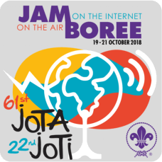

Basic carousel




Description of the building to follow.

Ian formed the radio group in 1981.

Joined the radio group as a 12 year Old Scout in 1982 after completing the Scout Communicator Badge Course SComm002.

Joined the radio group in

Joined the radio group in

Joined the radio group in

Joined the radio group in

Joined the radio group in

Joined the radio group in

Joined the radio group in
Joined the radio group in
Radio Scouting is a unique combination of amateur radio with the Scouting programme. Scouts study radio communication and electronics among other things and can earn a number of Radio Scouting-related badges like the Communicator Activity Badge which is the badge containing an amateur radio component.
All Scouts that visited were given a brief introduction, before splitting into small groups. In the smaller groups they visited each of the different activities. 40/80 Meters station. 10 15 and 20 Meter SSB and FT8 finally our two meter station where they could pass greetings messages.

During our monthly meetings in 2023, The station will be operating using a Special Event callsign GB4NDS
Many thanks to Ron Pass. Ron has recently donated a TS130 HF Transceiver, an ATU and PowerSupply.
Two Laptops, both of which have been setup for Logging, Data modes using SDR receivers. The NOAA weather images On this site were received using one of the laptops.
Location: IO92nh, WAB Square SP76